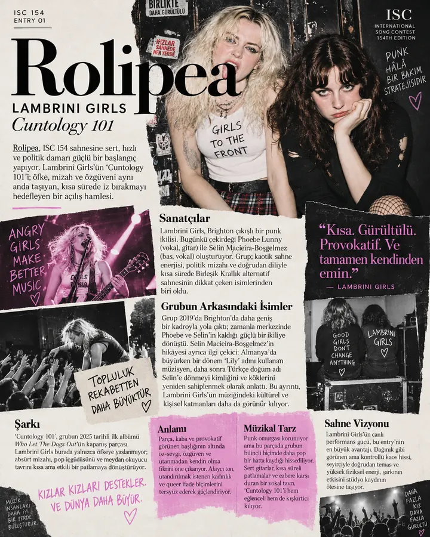

8/8 delegasyon tamamlandı.
International Song Contest · Current edition
ISC155
Sekiz şarkı.
Tek edisyon.
ISC 155’in resmî line-up’ı tamamlandı. Sekiz delegasyonun temsilcileri, şarkıları ve running order’ı artık yayında.
OFFICIAL LINE-UP
8 ENTRIES · RUNNING ORDER 01–08
ISC 155✦HOST NATION · ROLIPEA✦LINE-UP REVEALED✦8 SONGS · 8 DELEGATIONS✦YOUTUBE✦YOUTUBE MUSIC✦SPOTIFY✦
ISC 155✦HOST NATION · ROLIPEA✦LINE-UP REVEALED✦8 SONGS · 8 DELEGATIONS✦YOUTUBE✦YOUTUBE MUSIC✦SPOTIFY✦

ISC 154WINNER
Reigning champion
Lambrini Girls
“Cuntology 101” · ROLIPEA
65POINTS
1ST PLACE
WINNER STORY’Yİ AÇ →
1ST PLACE
ISC 155 / Current phase
Line-up is live.
Başvuru dönemi tamamlandı. Sekiz delegasyonun resmî entry’si ve running order’ı açıklandı; sıradaki aşama dinleme ve oylama.
ENTRIES8resmî şarkı
DELEGATIONS8ülke
OFFICIAL LINE-UPRUNNING ORDER→
Official running order
Meet the eight.
ISC 155’in sekiz resmî entry’si running order sırasıyla. Tam edisyon merkezinde videolara ve delegasyon profillerine ulaşabilirsin.
TAM LINE-UP'I AÇ →Line-up yükleniyor…
The road to 155
Line-up açıklandı. Sırada oylama.
ISC 155’in sekiz şarkısı artık yayında. Aynı site sıradaki aşamalarda dinleme, oylama ve final sonuçlarıyla gelişmeye devam edecek.
Sekiz şarkı ve running order yayında.
Resmî playlistler ve voting room açılacak.
Canlı final ve scoreboard dönemi.
Permanent archive
TÜM ARŞİVİ AÇ →
Geçmiş yarışmalar kaybolmaz.
Tamamlanan edisyonlar, katılımcılar, sonuçlar ve hikâyeler kalıcı arşivde yaşamaya devam eder. Ana sayfa ise her zaman sıradaki yarışmaya bakar.